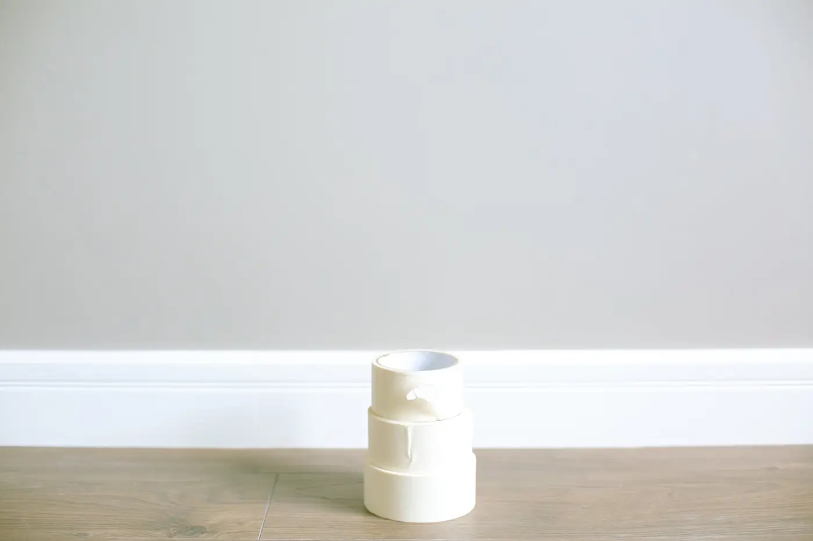

5 tips om afplaktape te gebruiken
Om mooi af te lijnen tussen twee kleuren of een overgang tussen muur en plafond te schilderen, is afplaktape of schilderstape absoluut noodzakelijk. Toch kan je alsnog de mist ingaan als je bijvoorbeeld niet de juist afplaktape gebruikt. We geven je graag 5 tips om afplaktape te gebruiken en een mooit resultaat te garanderen.


Tip 1: koop niet de goedkoopste schilderstape
Door het brede aanbod op de markt, kan het verleidelijk zijn om een goedkopere afplaktape te kopen. Maar zoals dat bij alles zo is, kost kwaliteit nu eenmaal geld. Koop je dus een goedkope schilderstape, dan is de kans groot dat de verf onder de tape kruipt of dat de verf loskomt wanneer je de tape verwijdert. Kies dus voor een tape van iets betere kwaliteit om zo achteraf grotere kosten te vermijden wanneer bepaalde stukken mislukken door het gebruik van minder kwalitatieve tape.
Tip 2: kies de juiste tape voor de juiste toepassing
Er zijn tal van schilderstapes op de markt. Afhankelijk van de toepassing is niet alleen de kwaliteit, maar ook de dikte belangrijk! We vatten het even voor je samen:
- Op een standaard vlakke ondergrond zoals ramen, deuren, kozijnen of plinten mag je een relatief dunne tape gebruiken, met medium kleefkracht.
- Wens je pas geschilderde muren of een accentwand af te plakken, dan is dat toch al wat delicater. In dergelijke gevallen kies je best voor een tape met lichte kleefkracht.
- Moet je op zeer gevoelige ondergronden zoals behang of ongeschilderd vlies afplakken, speel dan op veilig en gebruik een schilderstape met zeer lichte kleefkracht.
- Op een ruw en poreuze ondergrond zoals beton of baksteen kan je best een zeer sterk klevende tape gebruiken.
- Voor het afplakken van licht vochtige ondergronden gebruik je best een tape met sterke kleefkracht.
Tip 3: maak de ondergrond schoon voordat je de afplaktape aanbrengt
Heb je ooit al eens plakband dat een beetje vettig is ergens proberen op te kleven? Dat werkt niet. Met afplaktape is dat ook zo: op stoffige, vettige of natte ondergrond blijft de schilderstape niet hangen. Maak dus de ondergrond schoon voordat je de tape aanbrengt. Extra tip: voor een mooie aflijning gebruik je best zo lang mogelijke stukken tape.
Tip 4: laat de afplaktape voldoende lang hangen
Over bepaalde schilderwerken kunnen enkele dagen tot soms zelfs weken gaan. Mag je de afplaktape dan ook zo lang laten hangen? Op de verpakking kan je lezen hoelang de schilderstape maximaal mag blijven hangen. Het is wel beter om de tape te verwijderen wanneer de verflaag niet te nat meer is en zeker voordat deze volledig is uitgehard.
Tip 5: tape voor de primerlaag kan je laten hangen, maar let op voor scheuren
Heb je afplaktape gebruikt voor de primer? Dan kan je die gerust ook voor de afwerkingslaag laten hangen, zelfs als de tape wat overschilderd werd door de grondlaag. Er bestaat wel een risico dat de tape bij het verwijderen doorscheurt door de aangekoekte verflaag.
Strakke lijnen en een verzorgd eindresultaat beginnen bij een goede voorbereiding. Toch is afplaktape slechts één onderdeel van een professioneel schilderresultaat. De juiste technieken, materialen en afwerking maken uiteindelijk het verschil. Tijdens een vrijblijvend plaatsbezoek adviseren we u graag over de mogelijkheden. Ontdek meer over onze binnen- en buitenschilderwerken.
Lees ook

Heeft je tuinhuis nood aan een stevige lik verf?
Kan je houten tuinhuis een nieuwe lik verf gebruiken? We vertellen je hoe je hout voorbereidt op schilderwerken en hoe…
Lees meer
Trappenhal schilderen, hoe begin je eraan?
Een trappenhal of inkomhal schilderen brengt enkele uitdagingen met zich mee, zeker als niet alle plekjes even goed…
Lees meer
Keukens en keukenkasten verven doe je zo!
Is je keuken toe aan een opknapbeurt? Schilder dan je keukenkasten of volledige keuken. We geven je enkele praktische tips.
Lees meerEen mooi resultaat begint met een goed gesprek.
Tijdens een vrijblijvend plaatsbezoek luisteren we naar uw wensen, geven we professioneel advies en bekijken we samen de mogelijkheden voor uw schilderwerken of interieurafwerking.